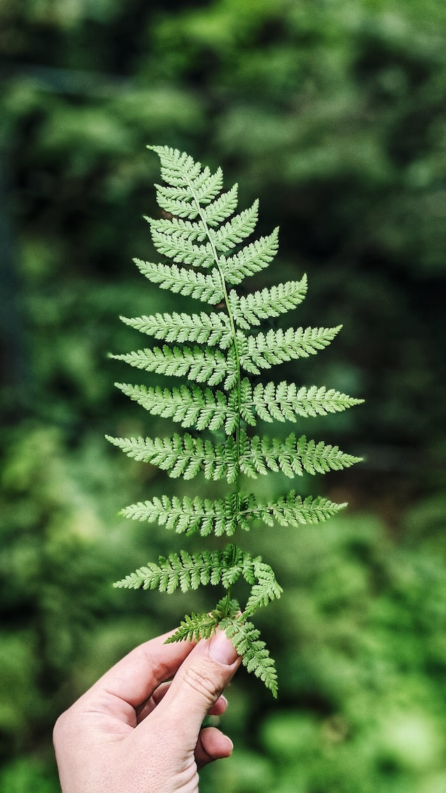
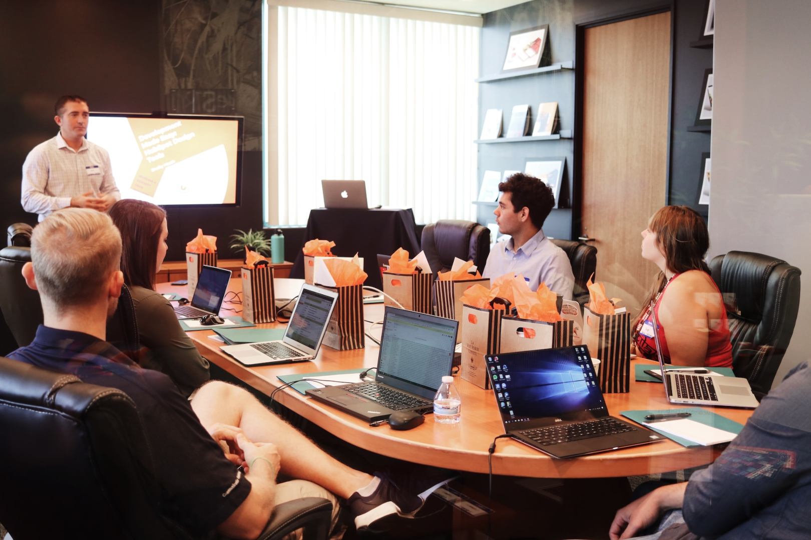
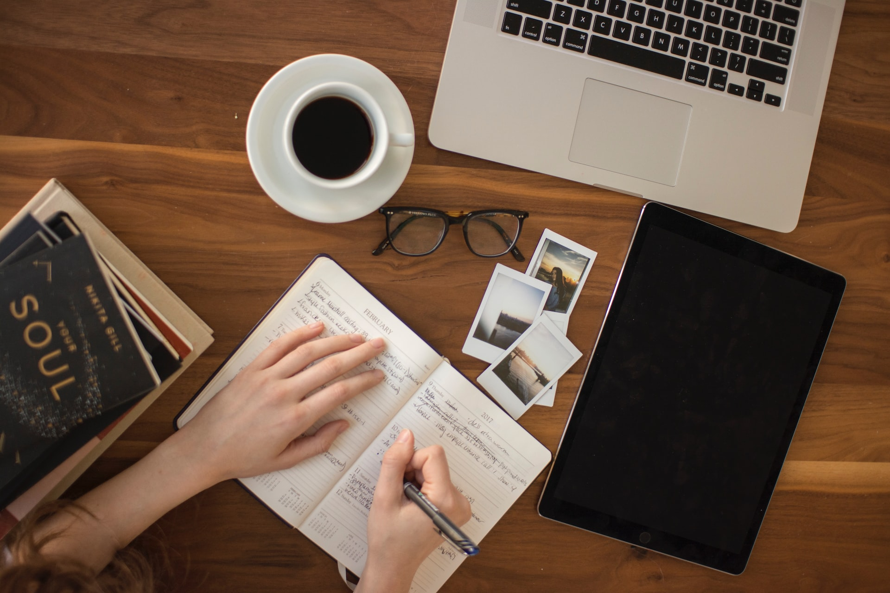

“If you ask many young people, most want a job that has a positive impact on the world. The only
problem is how to land this job. Due to the complexity and dispersivity of green knowledge, many
youngsters and graduates find a gap between their skillset and those required for a green job.
While this could be caused by some system failure, we are here to solve it.”
- Federico Quaratesi, founder and president.

Education


One of our mission is to educate young people - based on the 8 key competencies for lifelong
learning defined by the EU - on all aspects of sustainability, and one of the ways that we are
currently doing that is by hosting a free monthly webinar on topics in sustainability. These
free webinars will continue every month on different aspects of sustainability.
We are now also writing a sustainability bible in 4 aspects of sustainability (STEM, policy and law,
economics and humanities), this is to break down sustainability and its practicality. The
target are students and young professionals, but also everyone how wants to know more about sustainability.
Our look ahead in this area is to organize conferences, seminars, workshops and panels to
discuss and promote all aspects of sustainability.
SOME NUMBERS
According to our chief data officer Victor, this year, Easysustainability is projected to
grow significantly in terms of the number of associates and volunteers.
Since we started, only three Linkedin volunteer posts placed
in Italy, Germany and the Netherlands made us reach 100+ applicants and received candidacies
for becoming associates by 60+ people (conversion rate of around 60%). Moreover, our Linkedin
page has seen remarkable growth. We gained 41 new followers last year in December,
followed by 49 in January 2023, and an impressive 155 in February 2023, with a lot of
interactions by a diverse public. Considering these data, as well as the fact that we will soon have
many more channels and run a broad recruitment campaign, the CDO estimates that the NGO will
reach 5000 associates by the end of 2023 and 50,000 associates by 2030, the year within which
we need to have maximised our efforts for mitigating climate change, according to the Paris
agreement and other Significant international treaties.
We welcome collaboration
As an NGO, we rely on the financial as well as non-financial support of associates, volunteers,
partners, donors and public institutions to achieve our goals. Sustainability is not only an ethical
imperative but also a sound investment for the future of this planet. We welcome collaboration
opportunities with potential donors and EU MEPs to faster concretize our goals and help
European and global youth to go green.